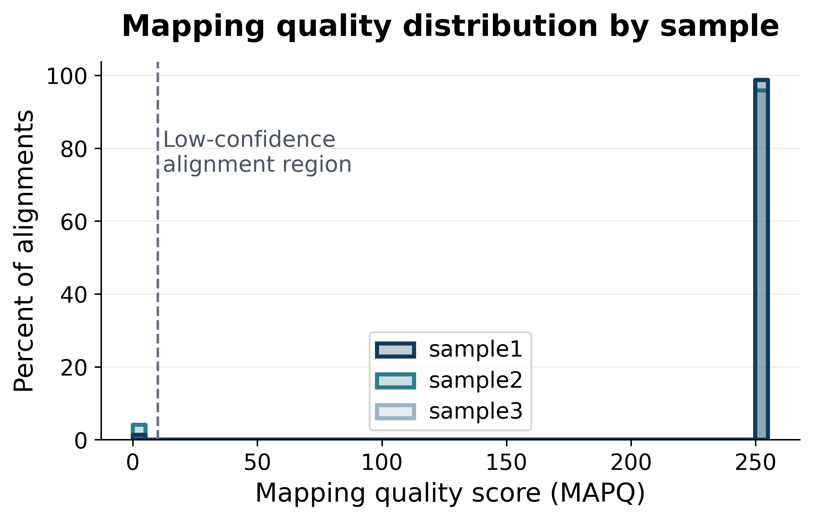
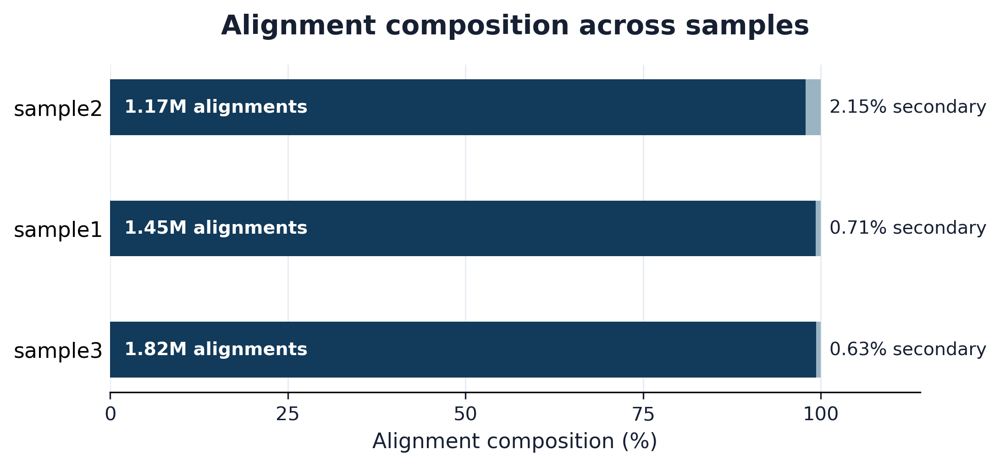
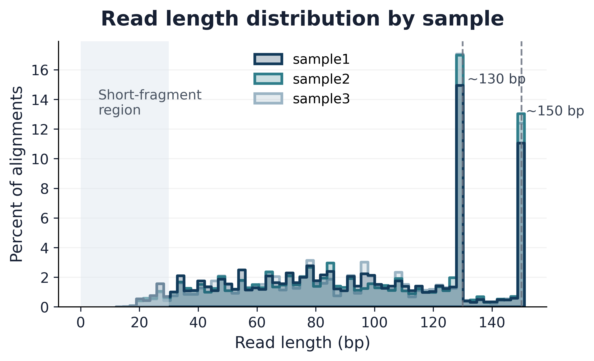
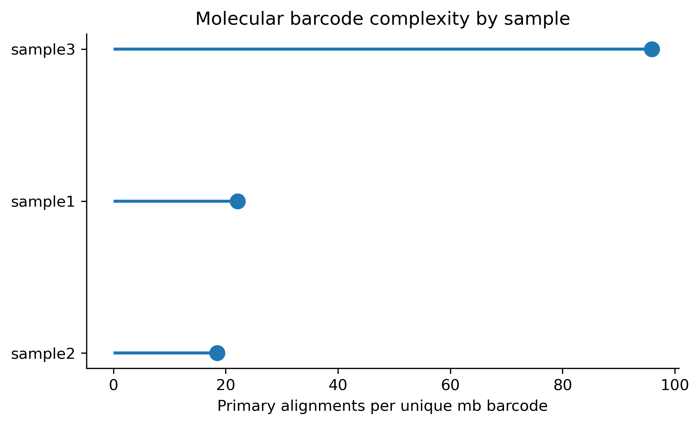
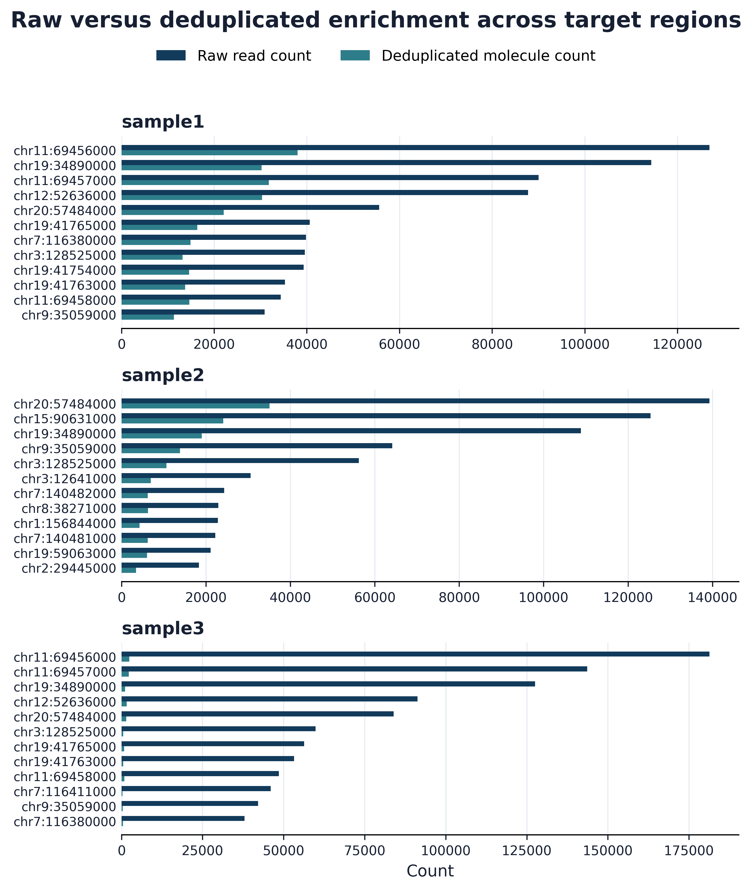
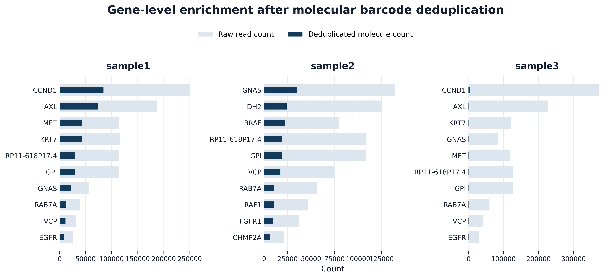
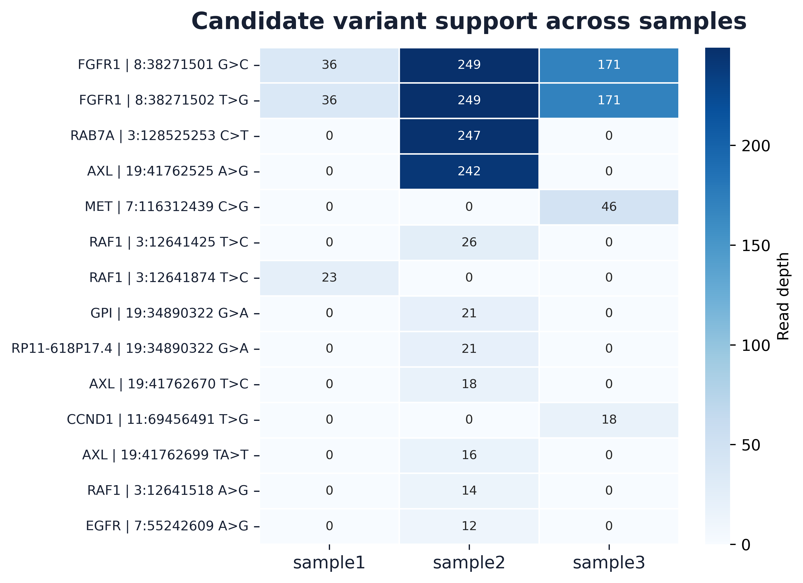
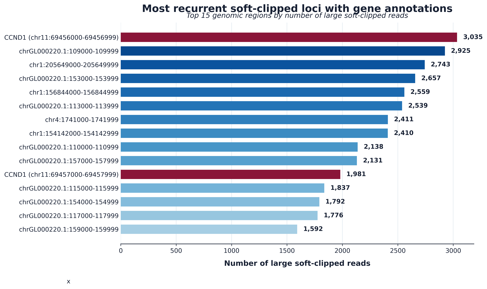
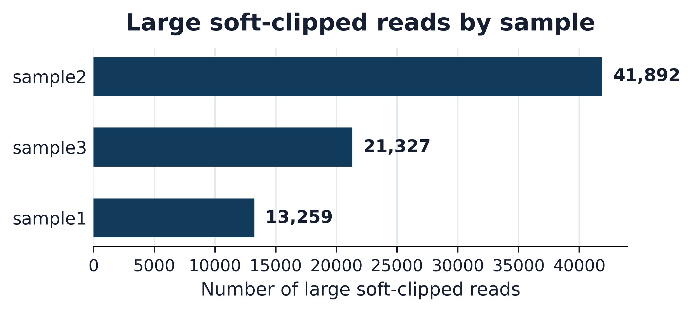

Summary
This analysis evaluated three hg19-aligned BAM files from a targeted small RNA sequencing workflow. The dataset showed strong
alignment quality, reproducible read-length structure, and enrichment concentrated within a focused set of cancer-associated loci.
Embedded 8-mer molecular barcodes stored in the mb BAM tag enabled deduplication and direct estimation of amplification redundancy.
Study Objective
The objective was to evaluate sequencing and alignment quality, identify enriched genes and targeted genomic loci, characterize candidate genetic variants, and investigate large soft-clipped read segments. Because only aligned BAM files were provided, interpretation was focused on alignment behavior, molecular barcode support, targeted enrichment, and sequence features that could be characterized without raw FASTQ data or assay design files.
Analysis Workflow
The workflow was organized to move from dataset quality assessment into molecular abundance, gene enrichment, candidate variants, and soft-clipped read characterization.
BAM Inspection
Reviewed read structure, alignment composition, mapping quality, read length, and embedded molecular barcode tags.
QC Profiling
Summarized MAPQ distributions, primary and secondary alignments, read-length profiles, and barcode complexity.
Gene Enrichment
Identified recurrent enriched genomic bins directly from BAM files and annotated them using GENCODE v19.
Variant Analysis
Filtered candidate variants within enriched regions and evaluated recurrence across samples.
Soft Clips
Characterized recurrent large soft-clipped reads and compared absolute and molecule-normalized soft-clipping signals.
Quality Control Overview
Alignment quality was strong across all three samples. Most reads clustered at high mapping quality values, primary alignments accounted for the overwhelming majority of reads, and read-length distributions showed reproducible enrichment peaks near 130 nt and 150 nt.

Mapping quality distribution
What this shows: Most alignments clustered at high-confidence MAPQ values across all three samples.
Why it matters: The low fraction of low-MAPQ reads supports generally strong alignment confidence across enriched target regions.

Alignment composition
What this shows: Primary alignments accounted for the overwhelming majority of reads in all three samples.
Why it matters: Secondary alignments remained a minor component of the overall signal, consistent with targeted regions resolving largely to primary mappings.

Read length distribution
What this shows: Read lengths were highly reproducible and showed prominent peaks near 130 nt and 150 nt.
Why it matters: The recurring length structure supports nonrandom fragment populations associated with the targeted assay.

Barcode complexity
What this shows: sample3 had an approximately four to five-fold higher reads-per-barcode value than sample1 and sample2.
Why it matters: This indicates reduced effective molecular complexity and increased amplification redundancy in sample3.
Molecule Level Abundance and Gene Enrichment
Enrichment estimates were evaluated using both raw alignment counts and barcode-deduplicated molecular counts. Deduplication showed that sample3 was strongly affected by amplification redundancy, while the overall enrichment profile remained concentrated within a recurrent set of cancer-associated genes.

Raw versus deduplicated enrichment across target regions
What this shows: Raw read counts and deduplicated molecule counts for the top enriched genomic bins in each sample.
Why it matters: The large raw-to-deduplicated shift in sample3 shows why raw sequencing depth can overestimate true molecular abundance.

Gene-level enrichment after molecular barcode deduplication
What this shows: The dominant enriched genes after deduplication included CCND1, AXL, GNAS, MET, IDH2, BRAF, HRAS, RAF1, and MAP2K1.
Why it matters: The same major genes remained enriched after deduplication, indicating that the target profile was not driven solely by amplification artifacts.
Candidate Variant Analysis
Sequence variation within enriched regions was limited. Most candidate variants were restricted to individual samples, while two adjacent FGFR1 substitutions were detected across all three libraries with consistent read-depth support.

Candidate variant support across samples
What this shows: Read-depth support for filtered candidate variants identified within enriched target regions.
Why it matters: FGFR1 was the only locus showing reproducible variant-associated signal across all three samples. Without matched controls or orthogonal validation, these remain candidate observations.
Soft-Clipped Read Characterization
Large soft-clipped reads were readily detected but were concentrated within a limited number of recurrent loci. The most frequent annotated locus mapped to CCND1, while several high-frequency regions mapped to poorly annotated or unplaced intervals including GL000220.1.

Recurrent large soft-clipped loci
What this shows: The top recurrent genomic regions associated with large soft-clipped reads across samples.
Why it matters: Soft clipping was concentrated within specific loci rather than distributed uniformly throughout the genome.

Large soft-clipped reads by sample
What this shows: sample2 had the largest absolute number of large soft-clipped reads, followed by sample3 and sample1.
Why it matters: After normalization by deduplicated molecular abundance, sample3 showed a disproportionate soft-clipping burden, especially within HRAS, CCND1, and AXL.
Key Findings
| Finding | Evidence | Interpretation |
|---|---|---|
| Technically consistent targeted assay | High mapping confidence, low secondary alignment fractions, and reproducible read-length structure. | The dataset behaves like a focused targeted assay rather than broad, nonspecific coverage. |
| sample3 has reduced molecular complexity | Highest reads-per-barcode ratio and largest reduction in signal after deduplication. | Raw read depth in sample3 overstates molecular abundance and should be interpreted using deduplicated molecule counts. |
| Enrichment is concentrated in cancer-associated loci | Recurrent enrichment of CCND1, AXL, MET, EGFR, FGFR1, BRAF, HRAS, and MAP2K1. | The target profile is consistent with a clinically focused targeted assay. |
| FGFR1 is the most reproducible candidate variant signal | Two adjacent FGFR1 substitutions were detected across all three samples. | The event is notable but cannot be classified as biological or technical without matched controls and orthogonal validation. |
| Soft clipping is recurrent but not diagnostic | Large soft-clipped reads concentrated in a small set of loci, including CCND1 and GL000220.1 intervals. | The signal is systematic, but current evidence does not support a definitive fusion or structural rearrangement call. |
Discussion
The dataset was technically consistent across all three samples. Alignment quality was strong, read-length distributions were reproducible, and enrichment was concentrated within a relatively small number of genomic regions. Despite differences in sequencing depth and barcode complexity, the same major targets were recovered across samples, supporting a focused enrichment strategy rather than broad, nonspecific coverage.
The largest source of variation was molecular complexity. Barcode deduplication had modest effects in sample1 and sample2 but substantially reduced abundance estimates in sample3. Elevated reads-per-barcode values, fewer unique molecules, and large differences between raw and deduplicated counts all point to increased amplification redundancy within that library.
Sequence variation within enriched regions was limited. FGFR1 was the only locus showing reproducible variant-associated signal across the dataset. Soft-clipped reads were also concentrated within a limited number of recurrent loci. While the current data do not support a structural rearrangement or gene fusion call, the sample3 pattern may warrant additional investigation if raw sequencing data or orthogonal validation become available.
Conclusion
The dataset is technically sound and captures a focused set of recurrent genomic targets with strong consistency across samples. The most important technical observation was the distinct behavior of sample3, which showed reduced molecular complexity, elevated amplification redundancy, and increased normalized soft-clipping rates. Molecular barcode information was critical for separating amplification-driven signal from true molecular abundance and for prioritizing features that may warrant downstream investigation.
Reproducibility and Supplemental Materials
The full computational workflow, notebooks, figures, and supporting scripts are provided as supplemental materials. This web report and the accompanying PDF are intended as primary review documents, while the repository provides implementation details.
Reference resources: hg19 reference genome and GENCODE v19 annotations.
Repository: github.com/jriv724/smallRNA_analysis